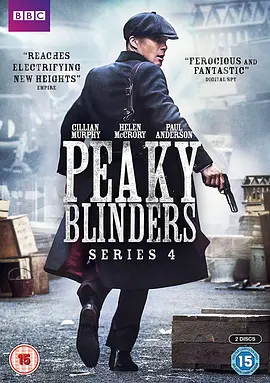

9.2
浴血黑帮 第四季
Peaky Blinders Season 4
2017
英国
评分 9.2
导演:
大卫·卡弗里
演员:
基里安·墨菲 / 汤姆·哈迪 / 保罗·安德森 / 阿德里安·布罗迪 / 乔·科尔
类型:
剧情,犯罪
剧情简介
圣诞前夕的伯明翰街道被冷风切得生硬，谢尔比家族却在一封突如其来的信中嗅到了死亡的气味。汤米·谢尔比站在昏暗的宅邸走廊里，手指轻敲信纸的边缘，那些从远方而来的字句像刀锋般划开旧伤。分散多年的家族再次被迫聚拢，而这次的敌人比往常更懂血仇的分量，也更愿意把复仇清算得彻底。汤米重新召回兄弟们，他的声音冷静，却压不住暗潮涌动的怒意。在工厂、巷道、赛马场的秘密会面中，家族成员的目光不断交错，彼此既依赖又抱着无法言说的怨气。旧裂痕像随时会爆的火种，但外敌的步伐逼迫他们不得不重新站到同一条战线。当阿德里安·布罗迪饰演的敌对家族代表踏入伯明翰时，空气瞬间变得紧绷。他举止沉稳，眼神却藏着复仇的算计，让每次交锋都像一场无声试探。街头的风向也因此改变，地下酒馆里的闲谈突然安静，工人们在厂区的脚步声亦变得急促。汤米在纷乱中保持着冷静，他深夜独自站在办公室窗前，灯光将他的影子拉得很长。他知道自己必须在家族、权力与自身安全之间做出艰难抉择，而那些决策往往只有他能承担。他与伦敦势力的旧合作再次被唤起，赌桌重新铺好，却没有人敢确定这一局是否会以谢尔比家族的名字结束。这一季让伯明翰的空气更锋利，也让谢尔比家族的命运在枪声与低语间愈发紧绷。家族之间的羁绊、仇敌不断逼近的步伐，以及汤米越走越深的黑暗，都令每一集都像悬在夜空的一颗火心。